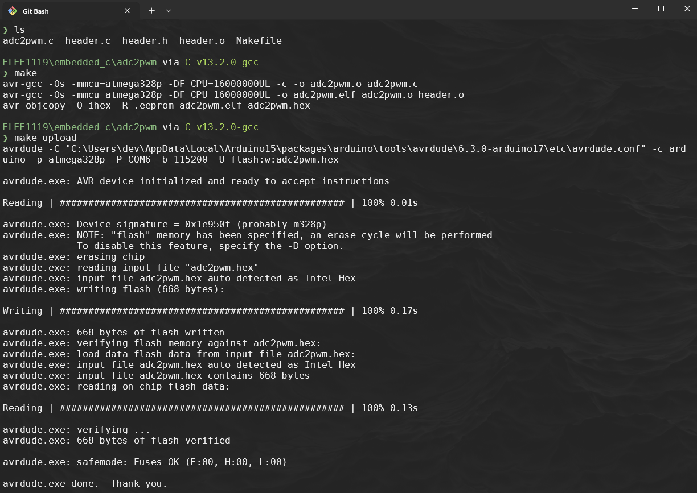

Full program
We are now going to put together the adc, uart and pwm functionalities into one script so that the adc value from a potentiometer or voltage divider circuit controls the brightness of an LED.
It is important that you have completed the prerequiste sections:
- blink
- adc
- uart
- pwm
- Remember to include in your
PATHavr-gcc,avrdudeandmake - Open
~/.bashrcand add the following lines, then save and run the commandsource ~/.bashrcto update the current session with the newPATH- Uni machines
# ~/.bashrc export PATH=$PATH:"/c/ProgramData/arduino-ide-v2/Local/Arduino15/packages/arduino/tools/avr-gcc/7.3.0-atmel3.6.1-arduino7/bin" export PATH=$PATH:"/c/ProgramData/arduino-ide-v2/Local/Arduino15/packages/arduino/tools/avr-dude/6.3.0-arduino17/bin" export PATH=$PATH:"/c/Program Files/GCC-Windows-MingW-2.0.0/w64devkit/bin" - Your personal windows machine
# ~/.bashrc export PATH=$PATH:"/c/Users/YOURUSERNAME/AppData/Local/Arduino15/packages/arduino/tools/avr-gcc/7.3.0-atmel3.6.1-arduino7/bin" export PATH=$PATH:"/c/Users/YOURUSERNAME/AppDataLocal/Arduino15/packages/arduino/tools/avr-dude/6.3.0-arduino17/bin" export PATH=$PATH:"/c/Program Files/w64devkit/bin" - You can install w64devkit from here:
- Uni machines
1. Arduino C version of adc2pwm.ino
We are essentially going to be converting the following standard adc to pwm program.
int analogPin = A0; // Analog input pin connected to a sensor or potentiometer
int pwmPin = 6; // PWM output pin connected to an LED or other device
int adcValue = 0; // Variable to store the ADC value
int pwmValue = 0; // Variable to store the mapped PWM value
void setup() {
pinMode(pwmPin, OUTPUT); // Set the PWM pin as an output
Serial.begin(9600); // Start the serial communication at 9600 baud
}
void loop() {
// Read the analog input (0 to 1023)
adcValue = analogRead(analogPin);
// Map the ADC value (0-1023) to PWM range (0-255)
pwmValue = map(adcValue, 0, 1023, 0, 255);
// Write the PWM value to the PWM pin
analogWrite(pwmPin, pwmValue);
// Print the ADC and PWM values to the Serial Monitor
Serial.print("ADC Value: ");
Serial.print(adcValue);
Serial.print(" | PWM Value: ");
Serial.println(pwmValue);
// Delay for stability and readability of the output
delay(250);
}
2. Making our own adc2pwm.c program
-
Create a new directory inside
embeddedCcalledadc2pwm -
Create a new file inside the the
adc2pwmdirectory calledadc2pwm.c -
Now it's time start wrighting out the
header.hfile which defines macros and declares functions for UART, ADC, and PWM initialization and operation:Suppressed code here... [20 lines]
#ifndef _HEADER_H #define _HEADER_H #include <avr/io.h> #ifndef F_CPU #define F_CPU 16000000UL #endif #define BAUD 9600 // Define baud rate #define BAUD_PRESCALER (((F_CPU / (BAUD * 16UL))) - 1) void UART_Init(void); void UART_Print(const char* str); void ADC_Init(void); uint16_t ADC_Read(uint8_t channel); void PWM_Init(void); #endif -
The
header.cfile contains the definitions for the functions declared inheader.h. These functions include UART initialization, ADC initialization and reading, and PWM configuration:Suppressed code here... [38 lines]
#include "header.h" // UART initialization for serial communication void UART_Init(void) { UBRR0H = (BAUD_PRESCALER >> 8); UBRR0L = BAUD_PRESCALER; UCSR0B = (1 << TXEN0); // Enable transmitter UCSR0C = (1 << UCSZ01) | (1 << UCSZ00); // 8 data bits } // UART Print Function to Send Strings Over UART void UART_Print(const char* str) { while (*str) { while (!(UCSR0A & (1 << UDRE0))); // Wait until buffer is empty UDR0 = *str++; // Send each character } } // ADC initialization for reading analog values void ADC_Init(void) { ADMUX = (1 << REFS0); // Reference voltage = AVcc, ADC0 selected ADCSRA = (1 << ADEN) | (1 << ADPS2) | (1 << ADPS1) | (1 << ADPS0); // Enable ADC with prescaler 128 } // Read analog value from specified ADC channel uint16_t ADC_Read(uint8_t channel) { ADMUX = (ADMUX & 0xF0) | (channel & 0x0F); // Select ADC channel ADCSRA |= (1 << ADSC); // Start conversion while (ADCSRA & (1 << ADSC)); // Wait until conversion completes return ADC; // Return ADC result (10-bit value) } // PWM initialization for Timer0 void PWM_Init(void) { DDRD |= (1 << DDD6); // Set PD6 (OC0A) as output TCCR0A = (1 << COM0A1) | (1 << WGM01) | (1 << WGM00); // Fast PWM mode, non-inverting TCCR0B = (1 << CS01) | (1 << CS00); // Prescaler set to 64 } -
The
adc2pwm.cfile contains the main loop, which reads an ADC value, maps it to a PWM duty cycle, and sends the ADC and PWM values over UART.Suppressed code here... [45 lines]
#ifndef F_CPU #define F_CPU 16000000UL #endif #include <avr/io.h> #include <stdlib.h> #include <util/delay.h> #include "header.h" int main(void) { uint16_t adcValue = 0; // Variable to store ADC value uint8_t pwmValue = 0; // Variable to store mapped PWM value char buffer[10]; // Buffer for string conversion for UART // Initialize UART, ADC, and PWM UART_Init(); ADC_Init(); PWM_Init(); while (1) { // Read the analog input from ADC channel 0 adcValue = ADC_Read(0); // Map ADC value (0-1023) to PWM range (0-255) pwmValue = ((uint32_t)adcValue * 255) / 1023; // Output PWM value on OC0A (PD6) OCR0A = pwmValue; UART_Print("ADC Value: "); itoa(adcValue, buffer, 10); // Convert adcValue to string UART_Print(buffer); UART_Print(" | PWM Value: "); itoa(pwmValue, buffer, 10); // Convert pwmValue to string UART_Print(buffer); UART_Print(""); // Print newline character // Delay for stability _delay_ms(50); } } -
This
Makefilecompiles, links, and uploads the program to the ATmega328P.Suppressed code here... [34 lines]
MCU = atmega328p F_CPU = 16000000UL CC = avr-gcc CFLAGS = -Os -mmcu=$(MCU) -DF_CPU=$(F_CPU) OBJCOPY = avr-objcopy AVRDUDE = avrdude AVRDUDECONFIG = "C:\ProgramData\arduino-ide-v2\Local\Arduino15\packages\arduino\tools\avrdude\6.3.0-arduino17\etc\avrdude.conf" PORT = COM6 BAUD = 115200 PROGRAMMER = -c arduino -p $(MCU) -P $(PORT) -b $(BAUD) TARGET = adc2pwm SOURCES = adc2pwm.c header.c OBJECTS = $(SOURCES:.c=.o) all: $(TARGET).hex $(TARGET).hex: $(TARGET).elf $(OBJCOPY) -O ihex -R .eeprom $< $@ $(TARGET).elf: $(OBJECTS) $(CC) $(CFLAGS) -o $@ $(OBJECTS) %.o: %.c $(CC) $(CFLAGS) -c -o $@ $< upload: $(TARGET).hex $(AVRDUDE) -C $(AVRDUDECONFIG) $(PROGRAMMER) -U flash:w:$(TARGET).hex clean: rm -f $(OBJECTS) $(TARGET).elf $(TARGET).hexNote:
If you are on your machine the AVRDUDECONFIG file path will be this format:
AVRDUDECONFIG = "C:\Users\YOURUSERNAME\AppData\Local\Arduino15\packages\arduino\tools\avrdude\6.3.0-arduino17\etc\avrdude.conf"
-
Now every time we modify
adc2read.corheader.{c,h}you can use theMakefilemake cleanmakemake upload
- Windows getting the correct port run:
-
$ wmic path Win32_SerialPort get caption, name, deviceID`

-

3. Exercise 1: Vary PWM Frequency with ADC Input
Objective: Modify the PWM frequency based on the ADC input value.
Instructions:
-
Use the ADC value (0–1023) from ADC_Read(0) to control the PWM frequency on Timer0.
-
Modify the TCCR0B register to adjust the prescaler based on ADC readings, switching between prescalers of 8, 64, 256, and 1024. For example:
-
0–255: Prescaler = 1024
-
256–511: Prescaler = 256
-
512–767: Prescaler = 64
-
768–1023: Prescaler = 8
-
-
Print the current PWM frequency setting to the UART.
4. Exercise 2: Implement UART Commands to Control PWM Duty Cycle
Objective: Enable the ATmega328P to receive commands over UART to adjust the PWM duty cycle.
Instructions:
-
Implement a function to read a character from UART and interpret it as a command.
- For instance, send + over UART to increase the PWM duty cycle by 10, and - to decrease it by 10.
-
Ensure the PWM duty cycle stays within the range of 0–255.
-
Print the updated PWM value to UART whenever it changes.
5. Exercise 3: Use ADC on Multiple Channels to Control Multiple PWMs
Objective: Expand the program to read multiple ADC channels and use each reading to control a different PWM pin.
Instructions:
-
Configure the ADC to read from channels ADC0 and ADC1.
-
Use the reading from ADC0 to control PWM on PD6 (OC0A) and ADC1 to control PWM on PD5 (OC0B).
-
Print both ADC values and both PWM values over UART.
6. Exercise 4: Temperature Sensing with the Internal Temperature Sensor
Objective: Use the ATmega328P’s internal temperature sensor to display temperature readings over UART and change the brightness of the LED
Instructions:
-
Set up the ADC to read from the internal temperature sensor (using the appropriate MUX setting).
-
Use the ADC reading to calculate temperature based on the ATmega328P’s temperature sensor calibration (refer to the ATmega328P datasheet for details).
-
Map value for outputting to pwm to change brightness of LED.
-
Print the calculated temperature to UART every second.